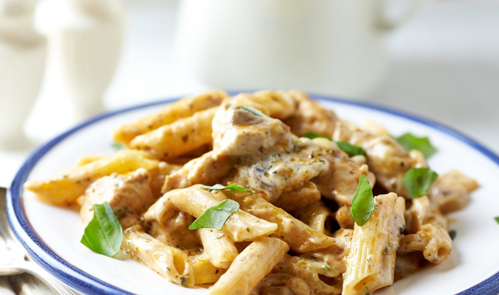

Kanapasta fänn

| Koostisosad |
Kogus |
| Kanafilee |
400 g |
| Penne pasta |
400 g |
| Vahukoor |
350 ml |
| Riivitud juust |
150 g |
| Kanamaitseaine |
Tunde järgi |
| Basiilik |
Tunde järgi |
Valmistamine
- Keeda penned poolpehmeks, maitsesta soolaga
- Lõika kanafilee kuubikuteks ning prae mõlemalt poolt kuldpruuniks
- Maitsesta kanafilee kanamaitseaine, soola ja pipraga
- Lisa kanafileele vahukoor minutiks
- Lisa penned ning kuumuta mõni minut, kuni koor muutub paksuks
- Lisa riivitud juust
- Serveeri basiilikulehtedega